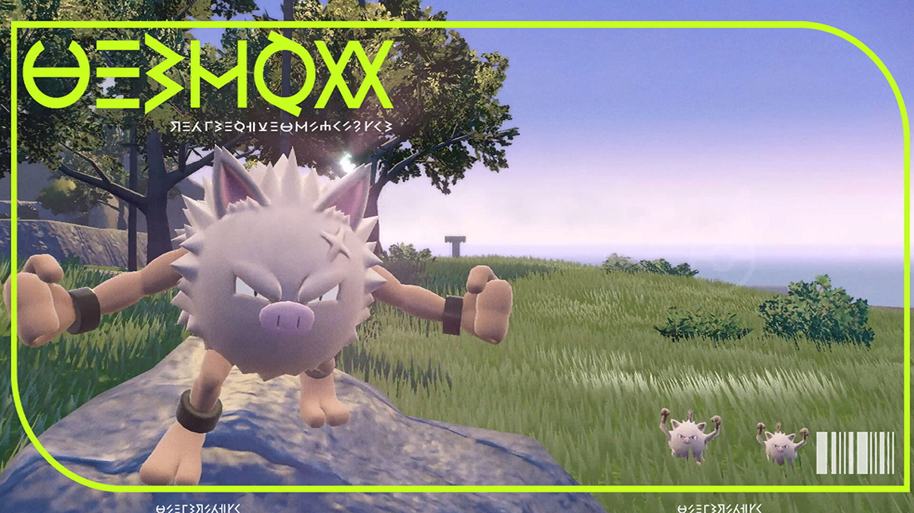

En los nuevos juegos de Pokémon hay distintos pokémon que evolucionan mediante requisitos un poco más complejos que las formás clásicas:
Pawmo
Este pokémon evoluciona al dar 1000 pasos junto a su entrenador.
Pawmot
| Pokémon | Requisito | Evolución |
|---|---|---|
| == 1000 pasos + nivel ==> |
Bramblin
Este pokémon evoluciona al dar 1000 pasos junto a su entrenador.
Brambleghast
| Pokémon | Requisito | Evolución |
|---|---|---|
| == 1000 pasos + nivel ==> |
Rellor
Este pokémon evoluciona al dar 1000 pasos junto a su entrenador.
Rabsca
| Pokémon | Requisito | Evolución |
|---|---|---|
| == 1000 pasos + nivel ==> |
Primeape

Primeape evoluciona a Annihilape al utilizar el movimiento puño fu
-ria 20 veces y subir de nivel.
Annihilape
| Pokémon | Requisito | Evolución |
|---|---|---|
| == 20 puños furia + subir de nivel ==> |
Girafarig
Girafarig evoluciona a Farigiraf al subir de nivel y conocer el movi
-miento "Laser doble".
Farigiraf
| Pokémon | Requisito | Evolución |
|---|---|---|
| == Conocer "Laser doble" + subir de nivel ==> |
Dunsparce
Dunsparce evoluciona a Dudunsparce al subir de nivel y conocer el
movimiento "Taladradora".
Dudunsparce
| Pokémon | Requisito | Evolución |
|---|---|---|
| == Conocer "Taladradora" + subir de nivel ==> |
Finizen
Finizen evoluciona a Palafin al subir a nivel 38 y estar en el circulo
Unión con algúna persona.
Palafin
| Pokémon | Requisito | Evolución |
|---|---|---|
| == Circulo Unión + Nv38 ==> |
Bisharp
Bisharp necesita derrotar a otros 3 bisharp líderes llevando el ob
-jeto distintivo de líder.
Kingambit
| Pokémon | Requisito | Evolución |
|---|---|---|
| == Derrotar 3 bisharps + distintivo líder ==> |
Gimmighoul
Gimmighoul evoluciona a Gholdengo al darle 999 monedas de Gi
-mmighoul.
Gholdengo
| Pokémon | Requisito | Evolución |
|---|---|---|
| == Dar 999 monedad de Gimmighoul ==> |